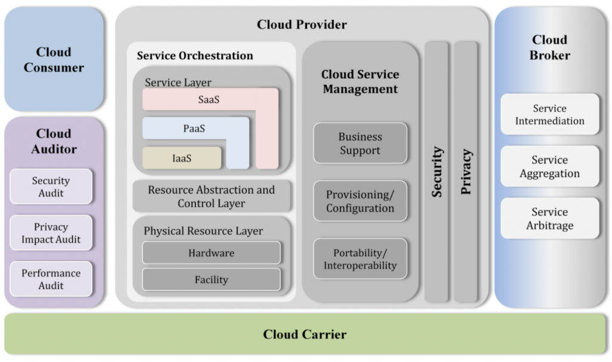

Virtualization vs Cloud
Cloud computing is the on-demand availability of resources.
| PROS | CONS |
|---|---|
| flexibility, agility and choices | Security? |
| scale, efficiency and cost | might be hard to change providers (lock) |
| simplicity, encapsulated change management | lack of control (patches, for example) |
| Up-to-date technologies | Reliability |
Types
Public (tenant) - most common. Share resources with other companies.
Private - don’t share resources. More security and control.
Hybrid - the part of the business that needs to grow uses the public option.

SaaS - Google. Software as a Service.
PaaS - Platform as a Service.
IaaS - Infrastructure as a Service.
Deployment
- Consolidate and Virtualize
- Automate and Manage
- Integrate and Optimize
Security
You need to have disaster recovery and business continuity plan. Who’s in charge, who to be involved, communication plan, flows? We need to think about different complience issues, so that the cloud would operate according to our security policy. For example, for how long do we need the logs being kept. Is it compliant with the regulations that are important for the company? It should be available at all times, even if the provider is down or we need to change providers. Encryption, secure transport, audits. Identity and Access Management - who is accessing what, where, how and why?